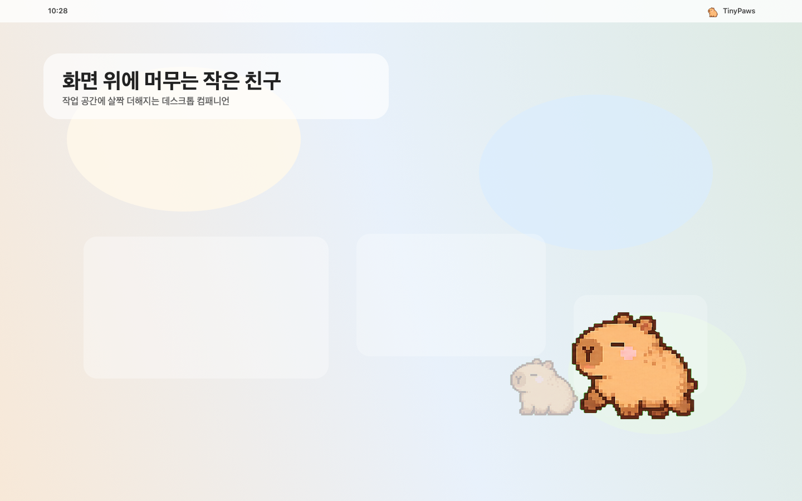
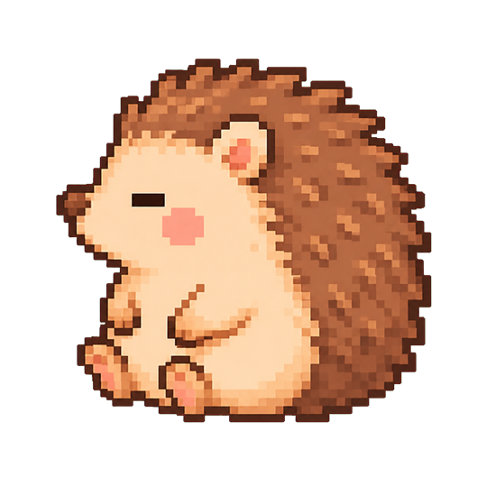
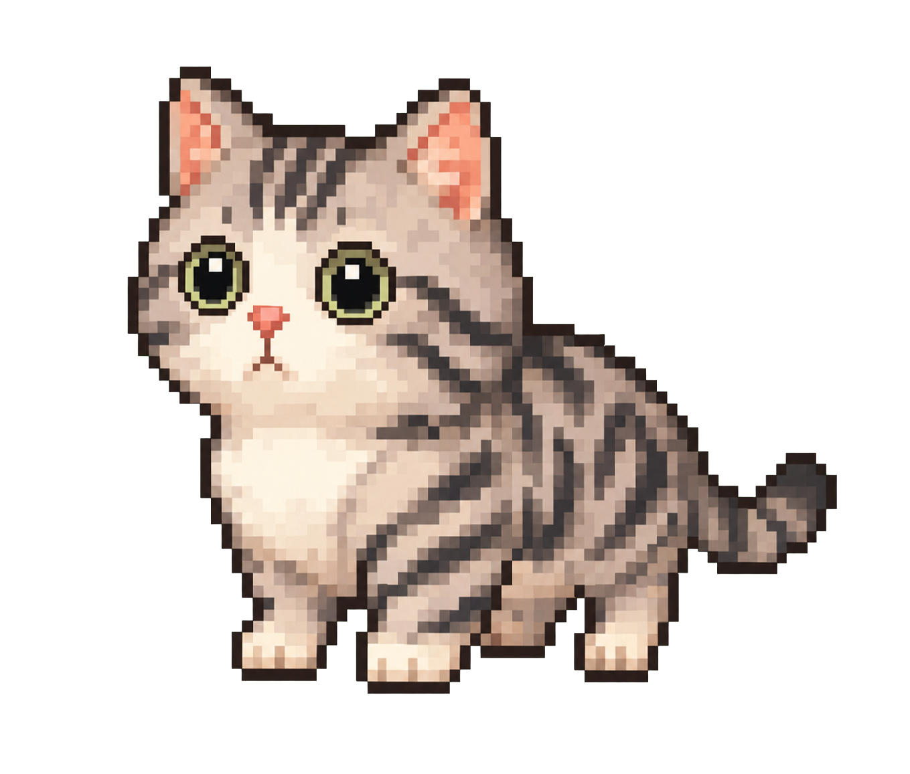
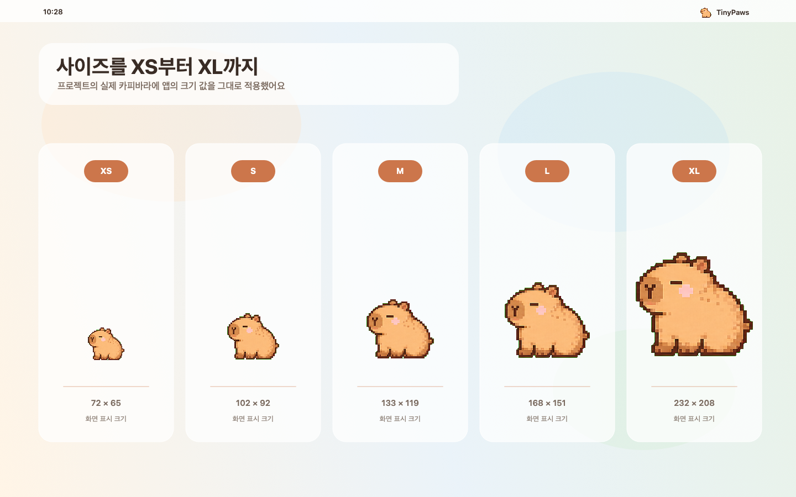
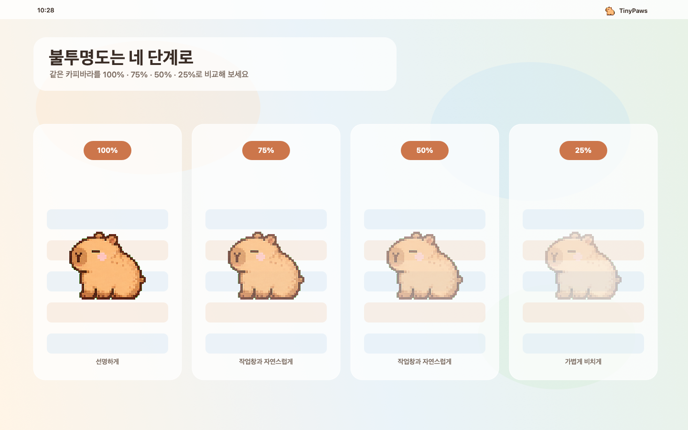
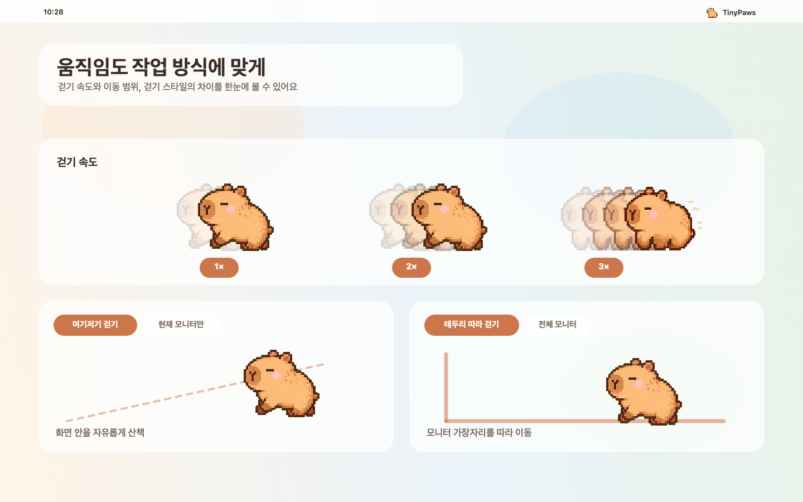

업무 중 화면을 돌아다니는 모습이 은근히 힐링돼요.
 TinyPaws 사용자카피바라와 함께
TinyPaws 사용자카피바라와 함께TinyPaws · macOS 데스크톱 펫
일하는 동안 화면 한쪽에서 천천히 걷고, 타이핑과 스페이스바에 반응해요. 메뉴 막대에서 나만의 친구를 골라 보세요.
TinyPaws는 Mac을 위한 앱이에요. 모바일에서는 친구들의 모습을 둘러볼 수 있어요.

3 steps, one tiny friend
DMG 파일을 열고 TinyPaws를 응용 프로그램 폴더로 옮겨 주세요.
앱을 열면 메뉴 막대에서 친구와 움직임을 선택할 수 있어요.
키보드 반응은 손쉬운 사용과 입력 모니터링 권한을 켜면 사용할 수 있어요.
Tiny reactions, happy screens
TinyPaws와 하루를 보내 본 분들이 들려준 솔직한 반응이에요.
업무 중 화면을 돌아다니는 모습이 은근히 힐링돼요.
TinyPaws 사용자카피바라와 함께스페이스바를 누를 때 점프하는 게 너무 귀여워요.

TinyPaws 사용자고슴도치와 함께캐릭터가 조용히 돌아다녀서 방해는 안 되고 귀여워요.

TinyPaws 사용자고양이와 함께여러분의 한마디가 다음 친구와 기능을 만드는 데 큰 힘이 돼요.
Pick your companion
일곱 명의 친구가 각자의 느긋한 걸음으로 화면을 산책해요.
Make it yours
메뉴 막대의 TinyPaws 아이콘에서 설정을 열고, 원하는 사용 방식에 맞춰 값을 바꿔 보세요.



권한 설정에서 손쉬운 사용과 입력 모니터링을 허용하면, 타이핑할 때 친구가 움직여요. 여기저기 걷기에서는 스페이스바를 누르면 점프해요.
Gentle privacy mode
비밀번호 입력창에 키인을 하는 동안 TinyPaws는 움직임과 애니메이션을 멈추고, 캐릭터 전체에 푸른 얼음 효과를 보여 줍니다.
입력칸을 벗어나면 얼음이 사라지고 다시 평소처럼 움직여요. 비밀번호 내용이나 입력한 키는 읽지 않습니다.
A surprise for every friend
메뉴 막대의 아이템 골라보기에서 캐릭터별 랜덤 아이템을 뽑거나, 선글라스를 자유롭게 쓰고 벗을 수 있어요.
랜덤 아이템 + 선글라스
아이템 골라보기
친구를 위한 깜짝 선물물음표를 누르는 순간, 지금 함께 걷는 캐릭터에게 꼭 맞는 아이템을 만날 수 있어요.
선글라스 착용 중
Dress up your TinyPaws
선글라스는 랜덤 뽑기와 별개로 언제든 켜고 끌 수 있어요. 어떤 캐릭터를 골라도 얼굴에 맞춰 자연스럽게 움직여요.
위 버튼을 눌러 착용 전후 모습을 비교해 보세요.
TinyPaws 아이콘을 눌러요.
친구의 랜덤 아이템을 뽑아요.
아이템을 벗고 기본 모습으로 돌아가요.
Fresh from TinyPaws
Buy developer a coffee
TinyPaws가 Mac 위의 하루를 조금 더 즐겁게 만들었다면, 작은 응원이 다음 캐릭터와 기능을 만드는 데 큰 힘이 됩니다.

휴대폰의 토스 앱으로 QR 코드를 스캔해 주세요.

카카오페이 앱으로 스캔하거나 결제 링크를 열어 주세요 →
TinyPaws를 따뜻하게 돌봐 주신 분들께 감사드려요.
Your desktop, your space
계정 등록과 결제 정보는 필요 없어요. 설정은 Mac에 저장되며, 앱의 핵심 경험은 클라우드 없이 작동합니다.
개인정보 처리 방식 보기